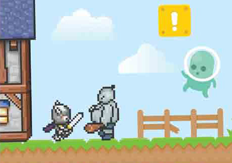

Selected jQuery Books
这
5
jQuery Game Development Essentials(基本的)
jQuery Mobile Cookbook
jQuery for Designers
jQuery HotShot(高手，特快)
jQuery UI Cookbook
是
1
Creating Mobile Apps with jQuery Mobile
测
1
Drupal(文档管理) 7 Development by Example
试
1
WordPress(博客系统) Mobile Applications with PhoneGap(缺口)
jQuery Game Development Essentials

jQuery Game Development Essentials
Salim Arsever